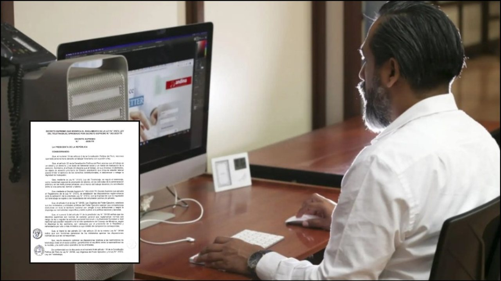

Las autoridades han establecido desvíos vehiculares en los alrededores de ambas avenidas y en los jirones cercanos, por lo que recomiendan a los conductores tomar rutas alternas mientras dure la actividad oficial del Sumo Pontífice.





Las autoridades han establecido desvíos vehiculares en los alrededores de ambas avenidas y en los jirones cercanos, por lo que recomiendan a los conductores tomar rutas alternas mientras dure la actividad oficial del Sumo Pontífice.
Carlos Villarreal, periodista de RPP que acompaña el viaje apostólico del papa León catorce por Sudamérica, estuvo dentro del avión de Aerolíneas Argentinas que trasladó al sumo pontífice de regreso al Perú.
Plaza de Armas de Lima reúne a cientos de fieles a la espera del papa León catorce. Gastronomía Terraza Lima Club cumple un año frente a la Plaza de Armas y anuncia nuevos eventos El rooftop abrió en julio de 2025 dentro del histórico Club de la Unión, frente a la Plaza de Armas, con.
en el Ronex Park de Lurín y contará con enfrentamientos en diez categorías: Rally 3, Tracción Integral Nacional (TIN), Rally 4, Rally 5, Súper Turismo (ST), Súper 2000 (S2000), Súper 1600 (S1600), Camionetas, T1 y UTV.
La Libertad: Chofer muere tras caer camioneta a barranco en Otuzco Se deslizó la versión de que la excesiva velocidad con la que conducía originó el fatal accidente Se deslizó la versión de que la excesiva velocidad con la que conducía originó el fatal accidente.
Keiko Fujimori: ¿Qué opinan tres excancilleres sobre ausencia de presidenta en despedida del papa León catorce? Como su primera actividad oficial tras arribar a Lima procedente de Argentina, el papa León catorce acude esta tarde a Palacio de Gobierno donde sostendrá una reunión con la presidenta Keiko Fujimori.
Luego de las revelaciones de Aída Martínez en el Café con la Chevez de la semana pasada, Carlos Alcántara llega al podcast de Trome para hablar de los capítulos más personales de su vida.
Sin embargo, un reciente cambio de criterio de la Autoridad Nacional de Protección de Datos Personales abre la posibilidad de que las empresas queden exentas de sanciones administrativas si corrigen oportunamente sus incumplimientos, incluso cuando el daño ocasionado ya no pueda revertirse.
Papa León catorce retorna a Lambayeque: economía de la región crece 9,6 por ciento en el segundo trimestre de 2026 Turismo en las playas del norte pierde impulso: ¿cómo amenaza El Niño la temporada de verano?
Cada edición dura menos de dos minutos. En la web tienes el resumen de cada historia y el enlace directo al medio original para leerla completa.
Conoce Olfatecho →